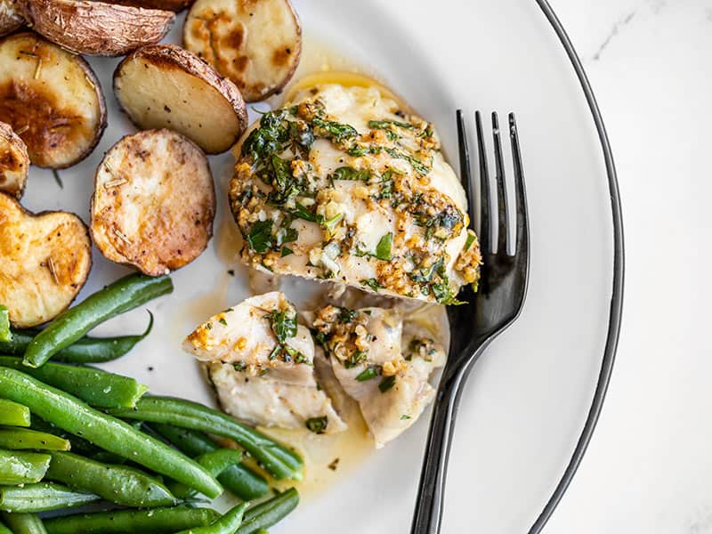

Garlic Lemon Chicken

Delicious lemony garlic chicken, remember to save the juice to put on rice!
Ingredients
- 4 tbsp of Butter
- 4 cloves of minced Garlic
- 1/4 tsp of Paprika
- 1/4 tsp of Salt
- 1/2 tsp of Pepper
- 1 Lemon
- 2 tbsp chopped fresh Parsley
- 1 lb of Chicken Breasts
Steps
- Preheat the oven to 400ºF. Place the butter in a bowl and microwave
for about 30 seconds, or until the butter is melted.
Stir in the minced garlic, spices, and parsley.
-
Cut the chicken breasts so no part is thicker than 1/2 inch.
- Place the chicken thighs in an 8x8" baking dish. Spoon the garlic butter mixture over the chicken thighs,
using the back of the spoon to spread it over the surface of the chicken.
-
Slice the lemon into half-rounds. Scatter the lemon pieces around the chicken in the dish.
-
Place the chicken in the oven and bake for 20 minutes.
- Use a spoon to drizzle the baking juices over top of the chicken, then serve!